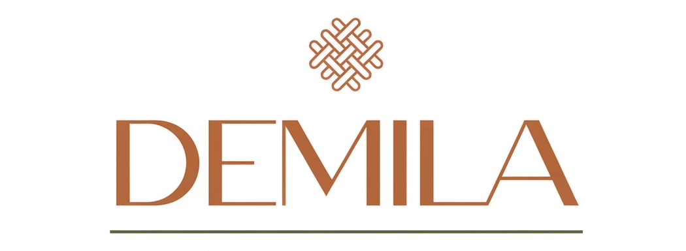
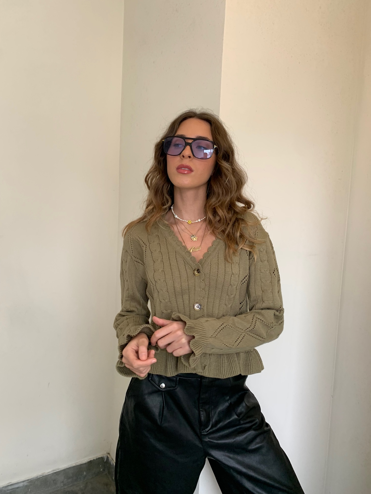
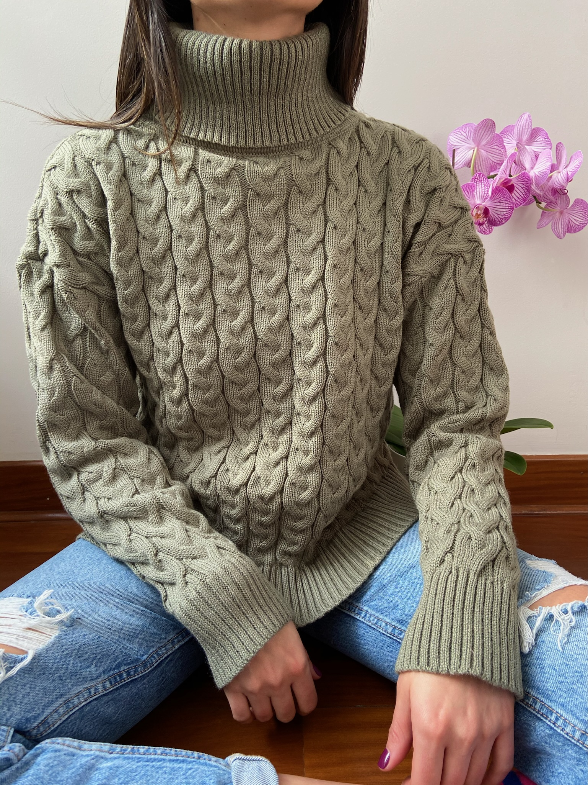
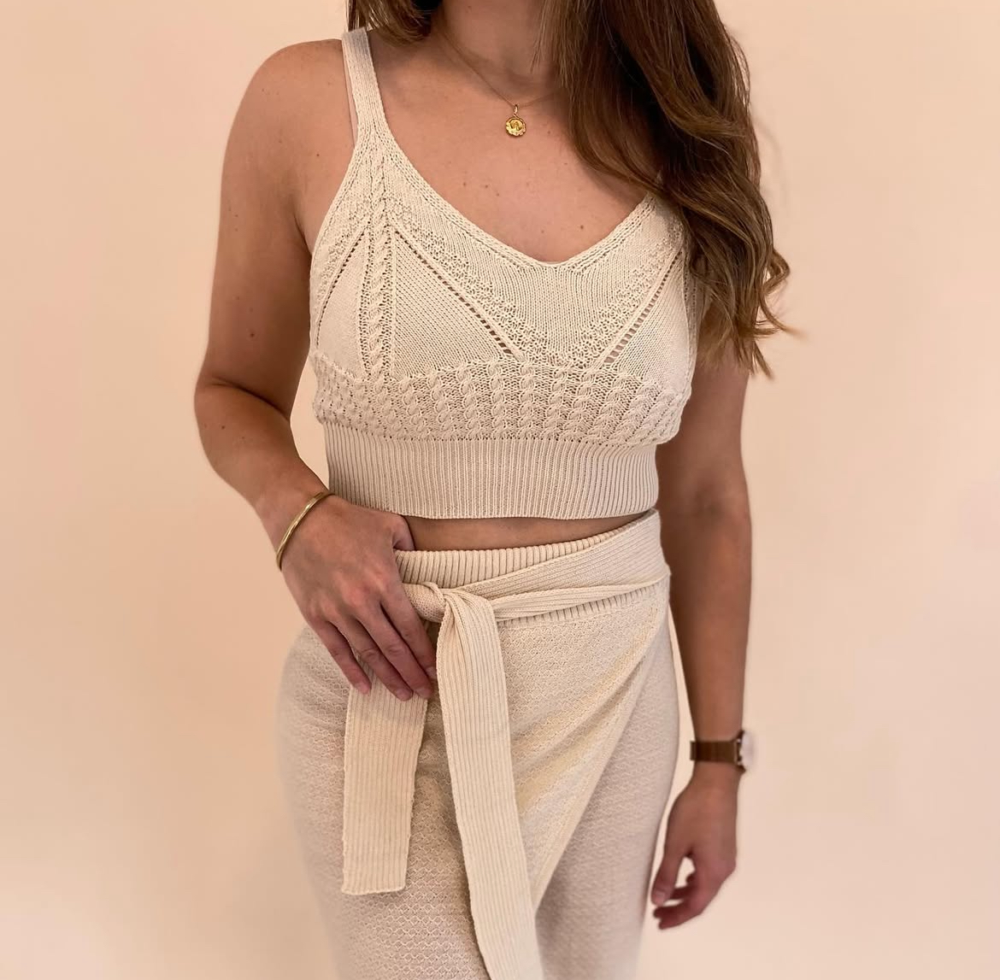
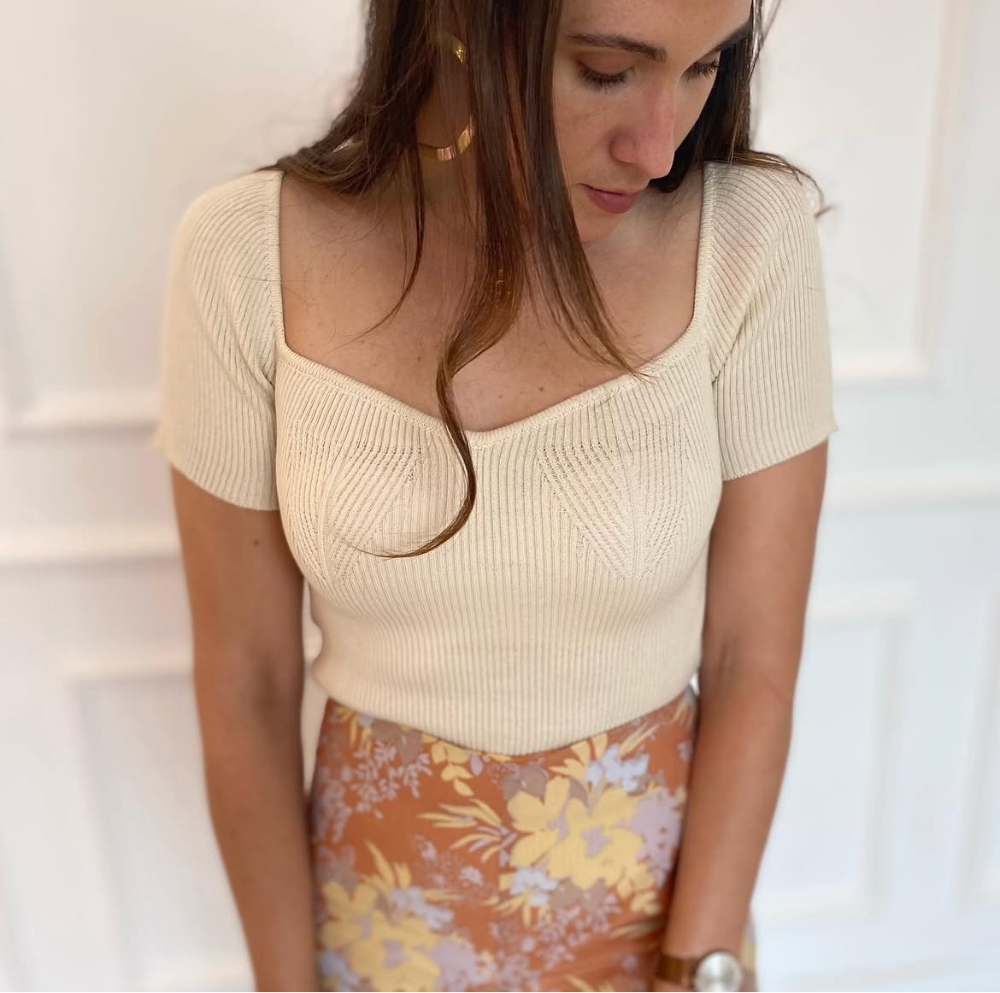
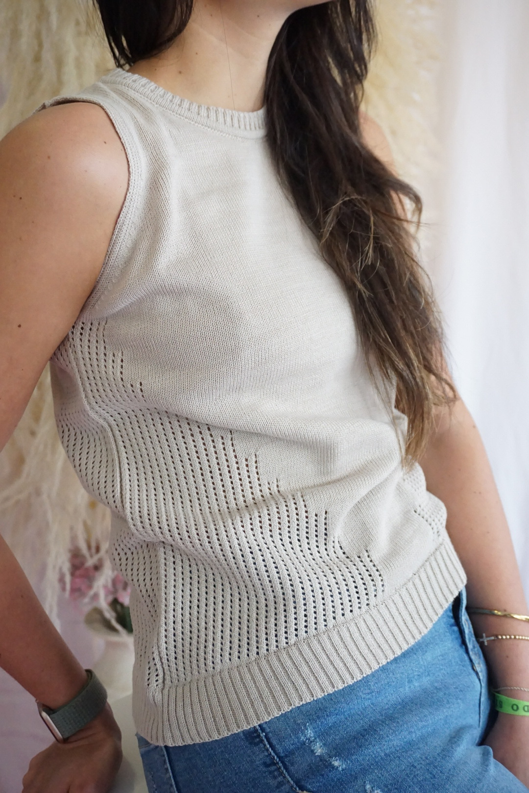
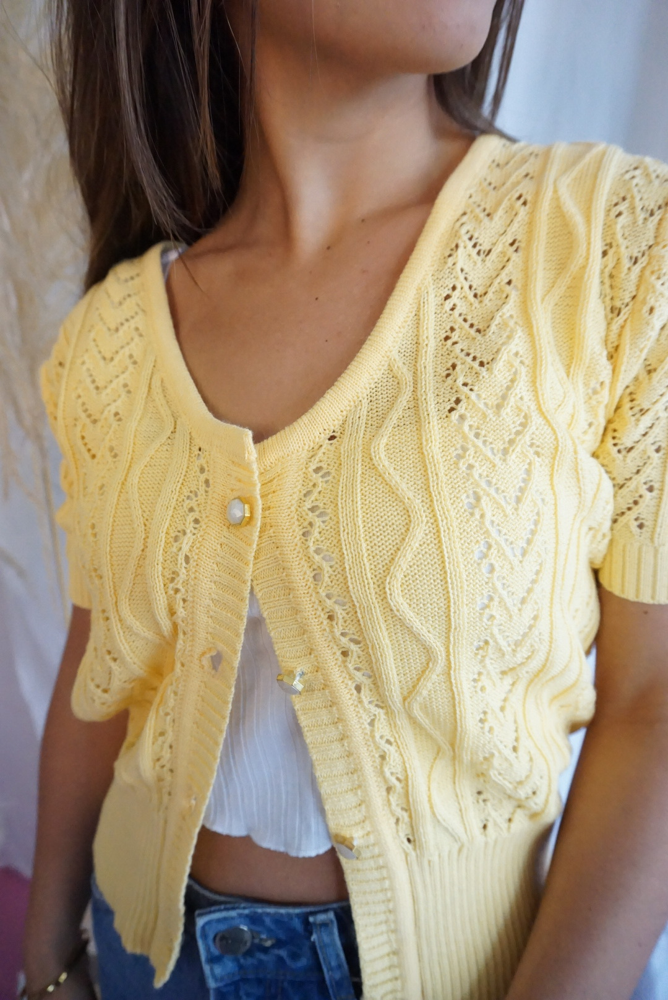
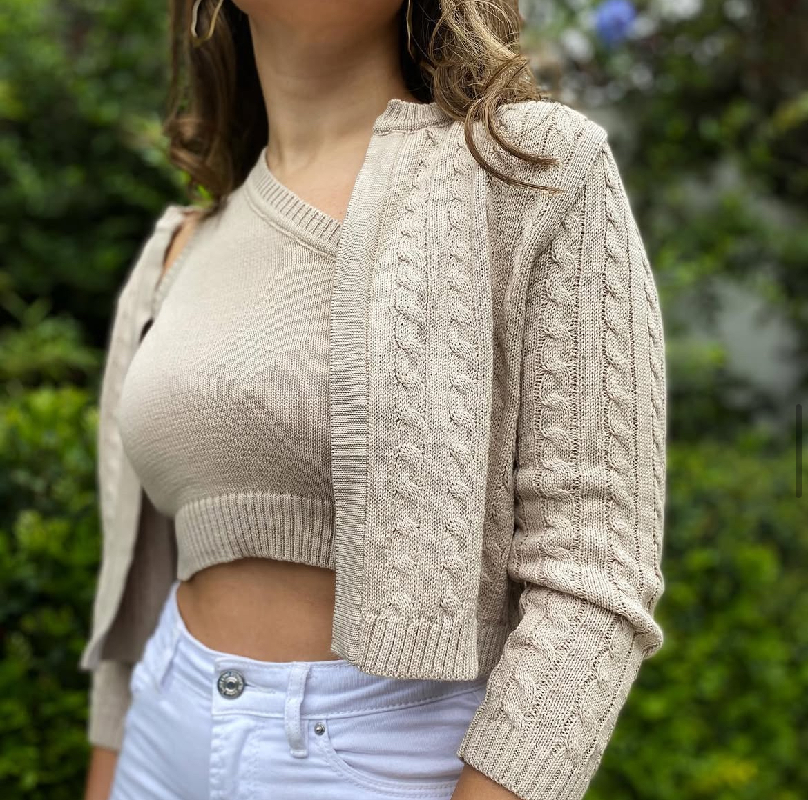
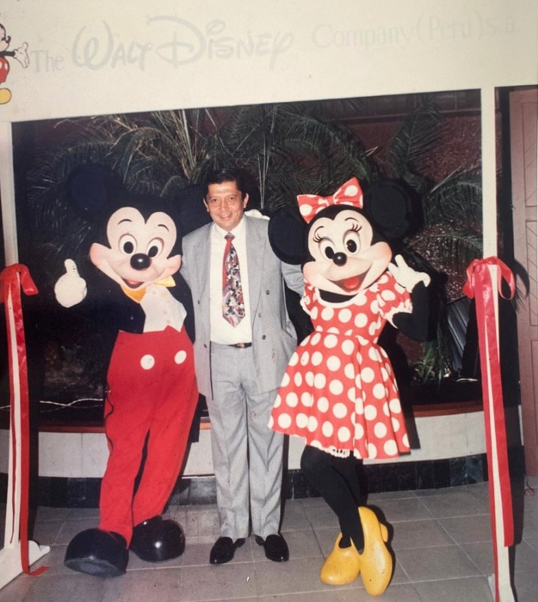

Elige o comparte
Selecciona un modelo del catálogo o comparte tu propia referencia.

Fábrica TextilLIMA, PERÚ · MÁS DE 38 AÑOS
Diseñamos y producimos colecciones en tejido de punto pensadas para boutiques y negocios retail que no se conforman con lo estándar: personalización, flexibilidad y cuidado en cada detalle.






Hecho para tu colección
MODELOS BASE
Personaliza cada modelo con tus colores, tallas, composición, acabados y branding.
13 modelos

DESARROLLA TU DISEÑO
¿Buscas algo fuera del catálogo? Envíanos un boceto, foto de referencia o ficha técnica. Te acompañamos desde la muestra hasta la entrega final.
UNIFORMES EN TEJIDO DE PUNTO
Desarrollamos uniformes tejidos para colegios y organizaciones: prendas pensadas para el uso diario, la identidad de tu institución y una producción confiable.
DEL DISEÑO A LA ENTREGA
Selecciona un modelo del catálogo o comparte tu propia referencia.
Definimos tallas, colores, materiales, branding y cantidades.
Validamos la cotización y muestras.
Producción de hasta 20 días útiles. Recojo en tienda o delivery.
NUESTRA HISTORIA
DEMILA nació en Lima hace más de 38 años. Desde entonces, hemos acompañado a marcas a transformar ideas en prendas de punto que llegan a sus clientes.
Hoy unimos la experiencia artesanal de nuestro equipo con la precisión de la producción moderna para ofrecer colecciones cuidadosamente construidas.
Conoce más de DEMILA →
PREGUNTAS FRECUENTES
El mínimo estándar es de 24 unidades por combinación de modelo y color. La distribución de tallas y opciones se valida durante la cotización.
Trabajamos Tacto Algodón, Dralon, Caribe HV y otras opciones de acuerdo con el diseño y el uso de la prenda.
Sí. Podemos cotizar etiquetas, hangtags, bolsas y otras opciones de branding para tu marca.
Atendemos todo Perú y coordinamos envíos internacionales. Puedes recoger en tienda o solicitar delivery con el pedido previamente cancelado.